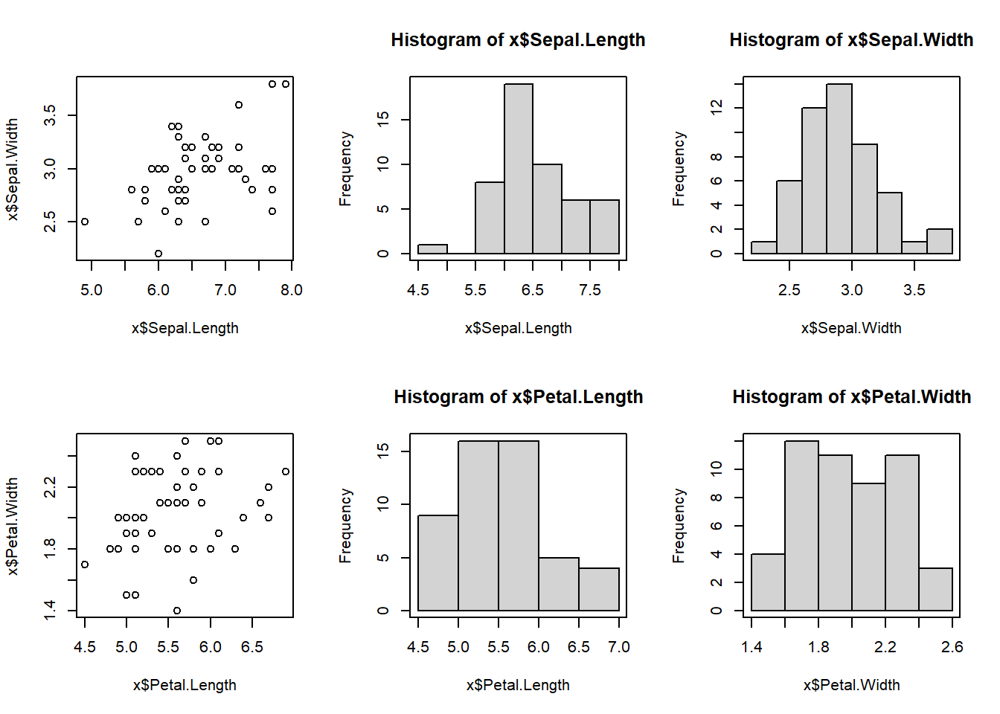
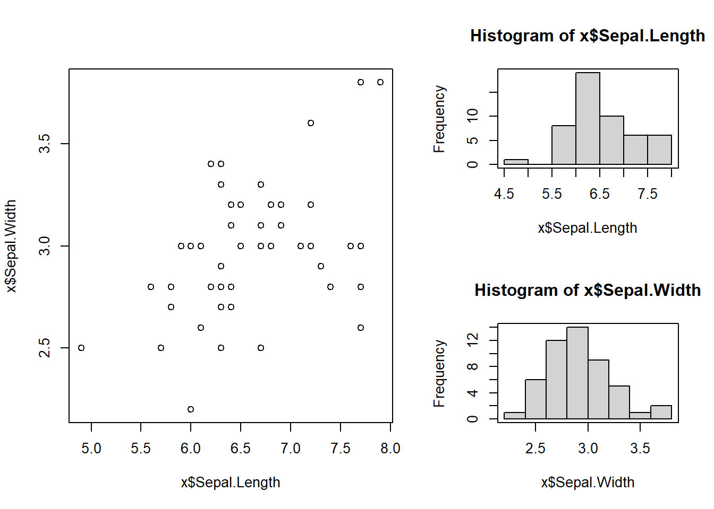
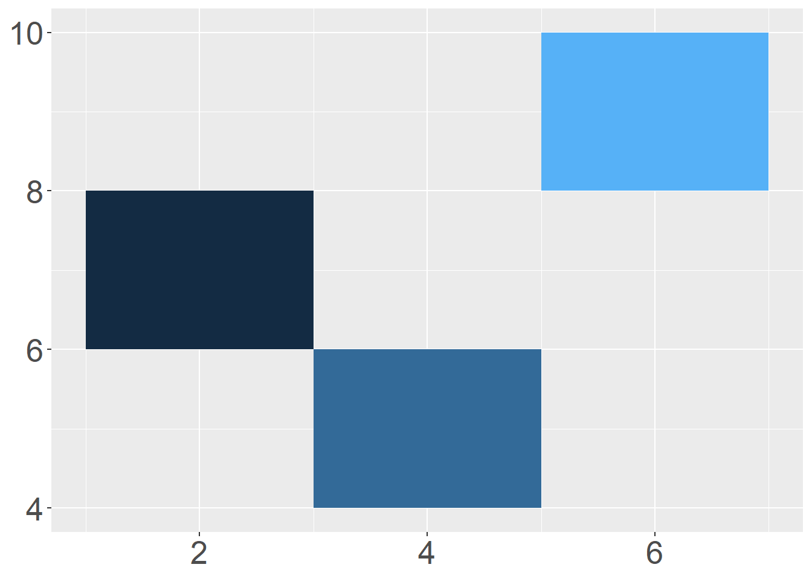
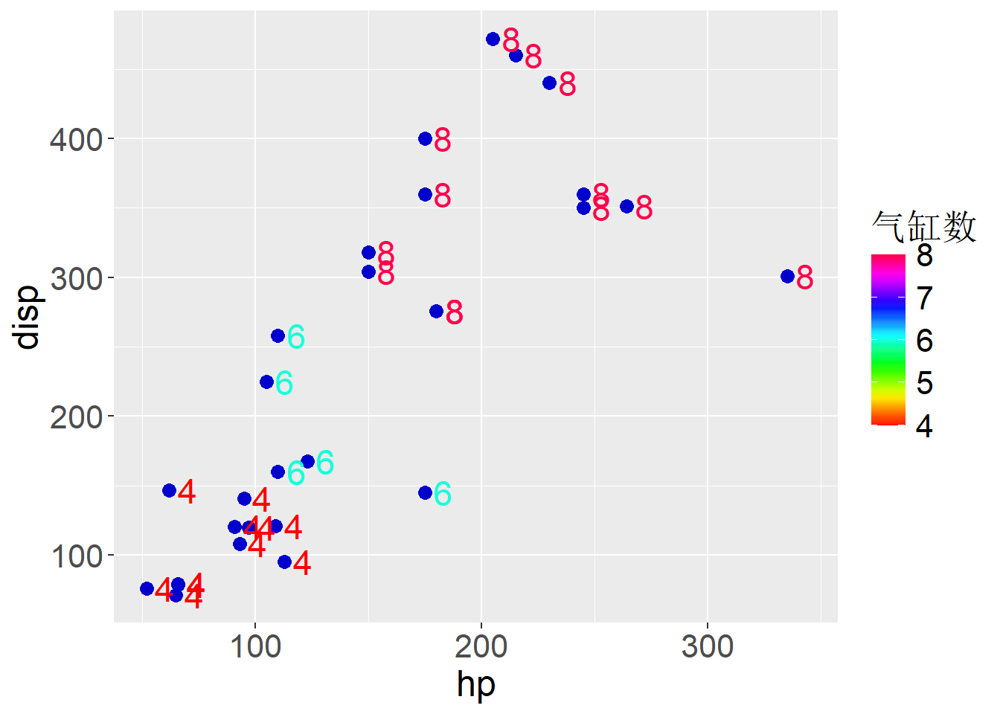
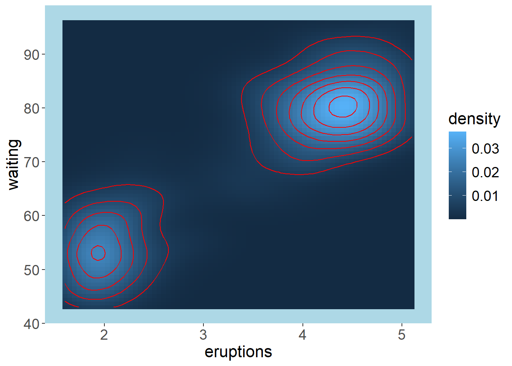
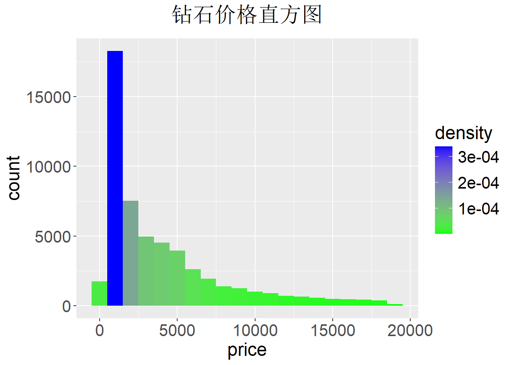
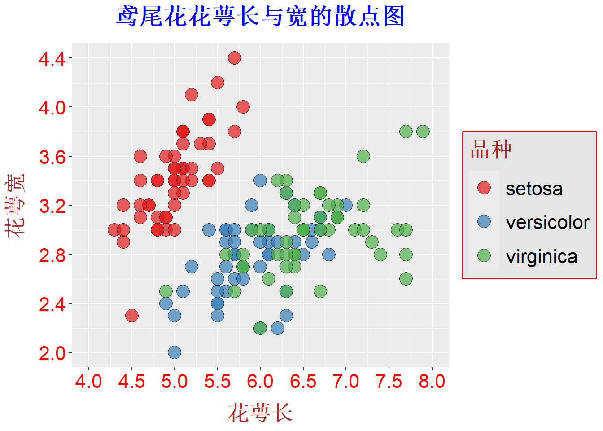

第十一周——ggplot2包
题目目的
（一）掌握par函数与layout函数的用法。
（二）掌握ggplot函数的使用方法。
（三）掌握主要几何元素的使用方法。
（四）掌握ggplot2的主要统计变换方法。
（五）掌握ggplot2的分页设置方法。
（六）掌握ggplot2的主要标度变换方法。
（七）掌握ggplot2的主题元素的设置。
题目
题目一：par函数和layout函数。打开脚本文件test1101.R，完成下面任务。
⑴ 用par函数按行将画布分成分成2行3列，然后，用x中的数据绘制如下图1所示的图形。
⑵ 用layout函数将画布分成2行2列，宽度分别为0.6和0.4，高度分别为0.5和0.5，然后用x中的数据绘制如图2所示的图形。 注意：图1和图2中的直方图，使用了box()函数添加了边框；在脚本文件最后添加par(mfrow = c(1,1))，恢复为单一窗口。

x = iris[101:150,]题目二：geom_rect函数。打开test1102.R，完成下面任务。
⑴ 在脚本文件中，数据框df包含两个变量x和y，以x为横坐标y为纵坐标，用geom_rect函数绘制如下图所示的瓦片图。
⑵ 颜色映射为x。
⑶ 不显示图例和轴标签，刻度标签字号为20。

df = data.frame(x=c(3,1,5), y=c(5,7,9))
library(ggplot2)题目三：geom_text、标度变换、主题元素。打开脚本文件test1104.R，完成下面任务。
⑴ 用数据框x中变换hp和disp作为x轴和y轴的数据，绘制散点图，点大小设置为3，颜色为”blue3”，如下图所示。
⑵ 用geom_text函数添加文本，参数label为数据框中的cyl变量，颜色映射为cyl，字号为6，文本框沿x轴方向移动8个单位。
⑶ 用标度变换函数scale_color_gradientn设置变换颜色集为rainbow(20)，设置图例标题为“气缸数”。
⑷ 图例标题和轴标签字号设置为18，图例关键字标签和刻度标签字号设置为16。

library(ggplot2)
x = mtcars[,c('hp','disp','cyl')]题目四：geom_raster和geom_contour展示三维数据。打开脚本文件test1105.R，完成下面操作。
⑴ 用数据框faithfuld中的eruptions和waiting映射为x和y，density映射为z，用geom_contour绘制等高线，颜色为红色。
⑵ 用geom_raster绘制二维密度，填充颜色映射为density。
⑶ 轴标签和图例标签字号为16，图例关键字标签和刻度标签字号为14，面板背景颜色为”lightblue”，清除主网格线与次网格线，如下图所示。

library(ggplot2)题目五：颜色标底和统计变量。打开脚本文件test1106.R，完成下面操作。
⑴ 绘制数据框diamonds中变量price的直方图，并把直方图的填充颜色为统计变换的中间变换density（用法为..density..），分箱的宽度为1000。
⑵ 用连续标度变换重置映射颜色，其中参数low和high设置为blue和green。
⑶ 轴标签和图像标题字号为20，图例关键字标签和刻度标签字号设置为18，如下图所示。
⑷ 图标题字号为22，标题与图间距为12，且标题居中对齐。

library(ggplot2)题目六：geom_point函数、属性映射、主题设置、标度变换。
⑴ 用geom_point绘制iris的Sepal.Length、Sepal.Width作为绘图数据，绘制散点图，其中Sepal.Length为x轴，Sepal.Width为y轴。
⑵ 点大小为5，透明度为0.7，点形状为21。
⑶ 图标题字号为20，与图之间的空白为12，粗体字。
⑷ 轴标签字号为18，粗体，颜色为棕色，与图之间的空白为10。
⑸ 刻度标签字号为16，图例关键字标签字号为16。
⑹ 图例标题字号为18，棕色，粗体，与图例之间的空白为10。
⑺ 图例关键字高度为1cm,宽度为0.9cm。注：用unit(1, ‘cm’)的形式设置。
⑻ 图例背景色为grey90，边框颜色为红色。其它按下图的样式进行设置。

library(ggplot2)答案及解析
题目一：
x = iris[101:150,]
#par函数
par(mfrow = c(2,3))
plot(x$Sepal.Length,x$Sepal.Width)
box()
hist(x$Sepal.Length,main = 'Histogram of x$Sepal.Length',ylab = 'Frequency',border = 'black')
box()
hist(x$Sepal.Width,main = 'Histogram of x$Sepal.Width', ylab = 'Frequency',border = 'black')
box()
plot(x$Petal.Length,x$Petal.Width)
box()
hist(x$Petal.Length,main = 'Histogram of x$Petal.Length',ylab = 'Frequency',border = 'black')
box()
hist(x$Petal.Width,main = 'Histogram of x$Petal.Width',ylab = 'Frequency',border = 'black')
box()par(mfrow = c(1,1))
# layout函数
x = iris[101:150,]
mx = matrix(c(1,1,2,3),nrow = 2)
layout(mx,widths = c(0.6,0.4),heights = c(0.5,0.5))
plot(x$Sepal.Length,x$Sepal.Width)
hist(x$Sepal.Length)
box()
hist(x$Sepal.Width)
box()par(mfrow = c(1,1))题目二：
df = data.frame(x=c(3,1,5), y=c(5,7,9))
library(ggplot2)
ggplot(
df,
aes(xmin = x,xmax = x+2,ymin = y-1,ymax = y+1)) +
geom_rect(aes(fill = x)) +
theme(
axis.title = element_blank(),
axis.text = element_text(size = 20),
legend.position = 'none'
)题目三：
library(ggplot2)
x = mtcars[,c('hp','disp','cyl')]
ggplot(x,aes(hp,disp)) +
geom_point(size = 3,color = 'blue3') +
geom_text(
aes(label = mtcars$cyl, color = mtcars$cyl),
size = 6, nudge_x = 8) +
scale_color_gradientn(colors = rainbow(20), name = "气缸数") +
theme(
legend.title = element_text(size = 18),
legend.text = element_text(size = 16),
axis.title.x = element_text(size = 18),
axis.title.y = element_text(size = 18),
axis.text = element_text(size = 16),
) 题目四：
# 加载ggplot2包
library(ggplot2)
# 使用faithfuld数据集
data(faithfuld)
# 绘制等高线图和二维密度图
p <- ggplot(data = faithfuld, aes(x = eruptions, y = waiting, z = density)) +
geom_raster(aes(fill = density)) +
geom_contour(color = 'red') +
theme(
axis.title.x = element_text(size = 16), # x轴标签字号设置为16
axis.title.y = element_text(size = 16), # y轴标签字号设置为16
legend.title = element_text(size = 16), # 图例标题字号设置为16
legend.text = element_text(size = 14), # 图例关键字标签字号设置为14
axis.text = element_text(size = 14), # 刻度标签字号设置为14
panel.grid.major = element_blank(), # 清除主网格线
panel.grid.minor = element_blank(), # 清除次网格线
panel.background = element_rect(fill = "lightblue"), # 面板背景颜色为"lightblue"
)
# 打印图形
print(p)题目五：
library(ggplot2)
ggplot(diamonds,aes(price)) +
geom_histogram(
aes(fill = ..density..), binwidth = 1000) +
scale_fill_continuous(low = 'green',high = 'blue') +
labs(title = '钻石价格直方图') +
theme(axis.title = element_text(size = 18),
axis.text = element_text(size = 16),
legend.title = element_text(size = 18),
legend.text = element_text(size = 16),
plot.title = element_text(
size = 22,hjust = 0.5,
margin = margin(b = 12)
)
)题目六：
library(ggplot2)
ggplot(iris, aes(Sepal.Length, Sepal.Width)) +
geom_point(
aes(fill = Species), size = 5,
shape = 21, alpha = 0.7) +
scale_x_continuous(
'花萼长',
limits = c(4,8),
breaks = c(4,4.5,5,5.5,6,6.5,7,7.5,8)
) +
scale_y_continuous(
'花萼宽',
limits = c(2,4.4),
breaks = seq(2,4.4,by=0.4)
) +
labs(
title = '鸢尾花花萼长与宽的散点图') +
scale_fill_brewer(
'品种',palette = 'Set1') +
theme(
plot.title = element_text(
size = 20,
color = 'blue',
margin = margin(b = 12),
hjust = 0.5,
face = 'bold'),
axis.title.x = element_text(
size = 18,
face = 'bold',
margin = margin(t = 10),
color = 'brown'),
axis.title.y = element_text(
size = 18,
face = 'bold',
margin = margin(r = 10),
color = 'brown'),
axis.text = element_text(
color = 'red',
size = 16),
legend.title = element_text(
color = 'brown',
size = 18,
margin = margin(b = 10),
face = 'bold'),
legend.text = element_text(
size = 16),
legend.key.height = unit(1,'cm'),
legend.key.width = unit(0.9,'cm'),
legend.background = element_rect(
fill = 'grey90',
color = 'red')
)